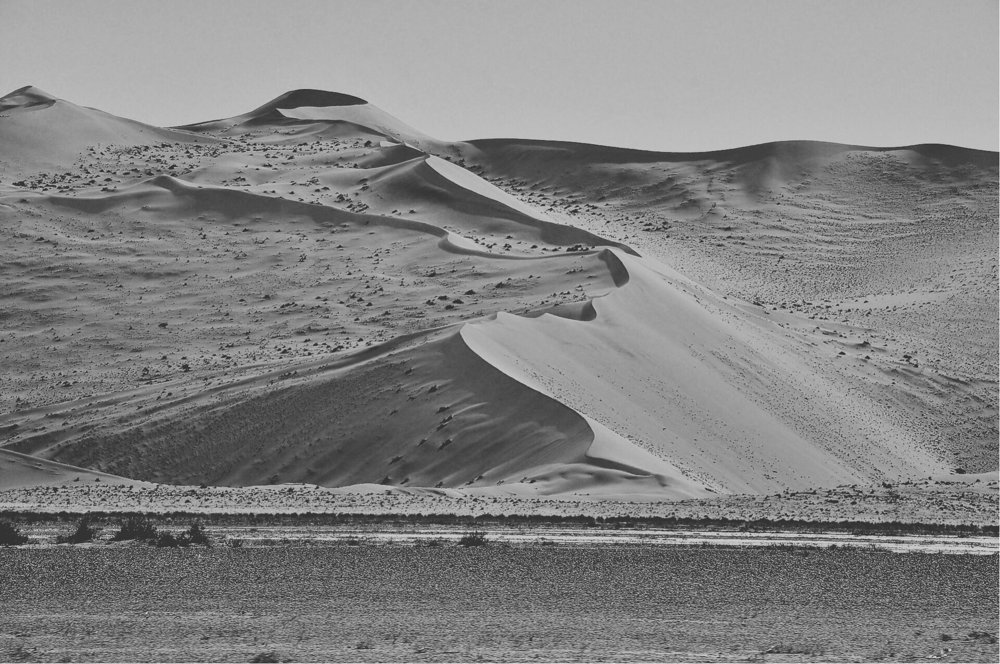

Todos mis proyectos son apasionados de diseño y desarrollo web, fusionando la estética visual con la funcionalidad impecable. En el corazón de cada proyecto está la pasión por la creación de experiencias digitales cautivadoras. Nuestra dedicación a la calidad y la atención al detalle. Cada línea de código, cada píxel y cada interacción son cuidadosamente diseñados y probados para garantizar un rendimiento óptimo y una experiencia del usuario sin igual.

Mi portafolio es más que una simple colección de trabajos; es el reflejo de mi dedicación, creatividad y experiencia en mi educación. Desde diseño gráfico hasta desarrollo web, cada proyecto que emprendo está impregnado de mi visión única y mi compromiso inquebrantable con la excelencia.


Este portafolio es una oda a la esperanza y el amor incondicional que encontré cuando adopté a mi fiel compañero en Arco Da Vella. Cada diseño que presento aquí es una manifestación de mi compromiso con la causa de las mascotas sin hogar y una invitación a unirte a mí en esta noble misión.

Mi objetivo es inspirar a otros a unirse a esta noble causa y aportar su granito de arena para construir un futuro mejor para todos.
El trabajo de las protectoras va mucho más allá de proporcionar un techo y comida. Estas organizaciones dedican sus esfuerzos a la adopción responsable, la educación comunitaria sobre el bienestar animal, la esterilización y castración, y la sensibilización sobre la importancia de tratar a todos los seres vivos con compasión y respeto. Cada perro y gato que encuentra un hogar a través de una protectora es un testimonio del amor incondicional y la perseverancia de quienes trabajan en estas organizaciones. Su labor no solo transforma la vida de los animales, sino que también enriquece la vida de las personas, llenando hogares con alegría, compañerismo y gratitud. Honoramos y agradecemos el trabajo invaluable de las protectoras de perros y gatos, cuyo compromiso con el bienestar animal inspira esperanza y nos recuerda el poder transformador del amor y la compasión.
En resumen, esta ciudad es mucho más que un lugar en el mapa; es un hogar, un santuario, un lienzo en blanco esperando ser llenado con las historias de aquellos que la llaman suya. Es una joya preciosa en el collar del universo, brillando con la luz única de su propio destino.